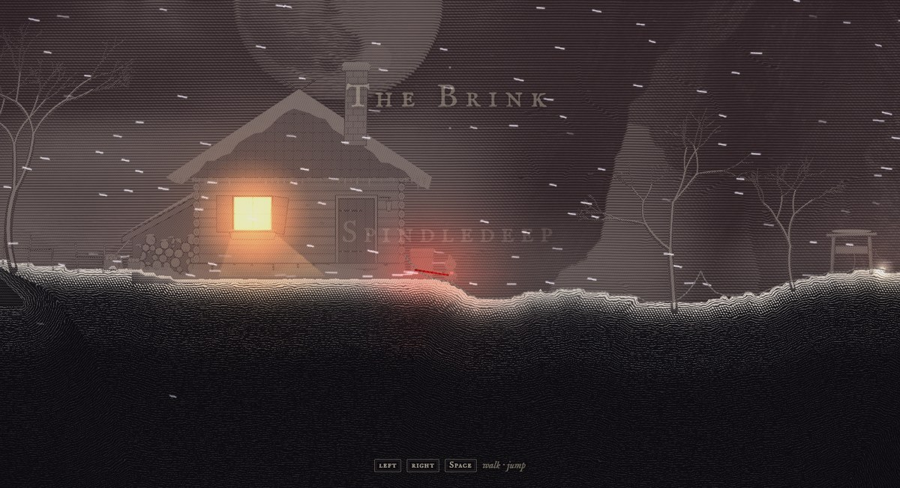
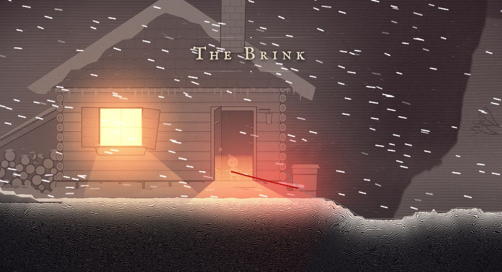
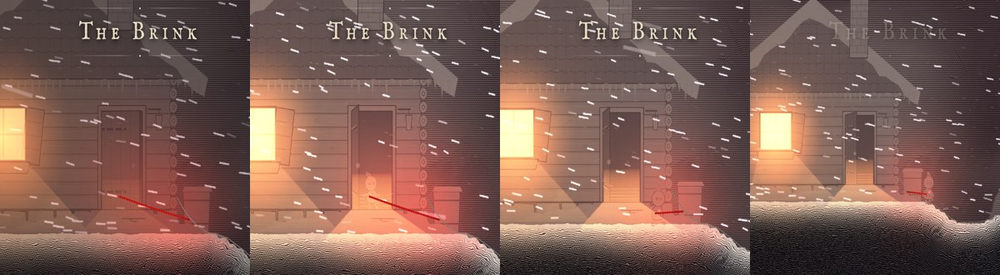

From the filmto the first step in the snow
The prologue no longer cuts straight to the doll standing in the yard. The storm keeps blowing across the cut, the game fades up on the shut cottage door, and she walks out of the house before you take control. The mouse pointer is hidden whenever no menu is open.
Please add a smoother transition between the first cutscene and the start of the game. Right now it is way too obvious. Maybe add some overlapping snowstorm sound? And make the doll exit the house before we get control over it (not in the video but already in game).
Before, the film ended on its title card fading to black and silence. Then the whole game snapped in at once: full picture, full storm, the controls hint already up, the doll already in the yard. Now the handover is spread over about seven seconds:
| When | Picture | Sound |
|---|---|---|
| Last 4 s of the film | the title card fades to black | the storm rises underneath, heavily muffled, as if heard through log walls |
| 0–2.8 s | the game fades up from black, close on the shut door; the window is lit | only the muffled storm; the game's own sound is held back |
| 1.7 s | the door swings open onto the dark room | a long creak; the muffle opens to the full gale, then hands over to the game's own wind as it comes up |
| 2.4–3.2 s | she stands on the sill and looks up into the snow | wind |
| 3.2–3.7 s | she steps down off the sill into the snow | a footstep in the snow |
| 3.7–5 s | she walks out into the yard; the view starts easing back | her steps |
| 5 s | a gust bangs the door shut behind her; snow bursts off the frame | the bang, low and heavy |
| about 7 s | the view settles at its usual distance; the controls hint appears | — she is yours |


BeforeAfterDrag the thread to compare

Checked in the hidden test window, through the real Begin button and film. The muffled storm starts under the title card while the film is still playing. The game's sound is silent until the door opens and back to full about two seconds later. The storm layer is gone after nine seconds. I can't listen, so the balance between the film's wind and the in-game storm is set by level, not by ear. Tell me if the join still pokes out.
Also please hide the mouse when I am not in menu.
The pointer is hidden during the films, in play, in the endings and over the credits. It comes back on the title screen and the pause menu, and goes away again when you resume. Checked in the test window: shown on the title, hidden in the film and in play, shown when paused.
app/src/main.jsbeginWalkOut / walkStep and the WALK timings; the film starts the storm 4.2 s before its end; the fade from black; the cursor toggle.app/src/audio.jsstorm(), stormOpen(), stormStop(): the muffled gale played past the silenced master; fadeMaster().app/src/draw.js · world.jsThe door swinging on its hinges, the dark room and its floor light; her size on the sill; no hints during the walk.app/style.cssbody.nocursor.